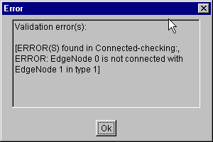
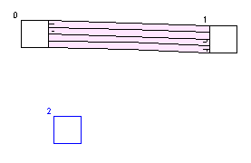

1. Editor
 a. Interface
a. Interface
 b. Usage
b. Usage
 c. From maps to sims
c. From maps to sims
2. Simulator
3. Evaluation Tools
4. An Example Session
5. Algorithms
From Editor maps to GLD Simulations
After you have created a map, run the Validation to check for inconsistencies.
Id numbers will appear next to Nodes, which will be of use later on in Statistics, or an Error
dialog pointing you to errors.
You will have to correct errors manually, by following the pointer ID's to the villain node and creating extra roads. Edge nodes will have to be connected to precisely one junction, and junctions should not form dead ends with edge nodes.
Also, instead of using junctions to wrap around existing infrastructure sections, make turns. This is not only more consistent than artificial "junctions" for evaluation, but will display more logically.
When expanding an infrastructure it is common to have to remove
Now, with your map or one chosen out of the ready made maps, you are ready to start simulating.
Start the GLD Simulator and load your chosen map.

